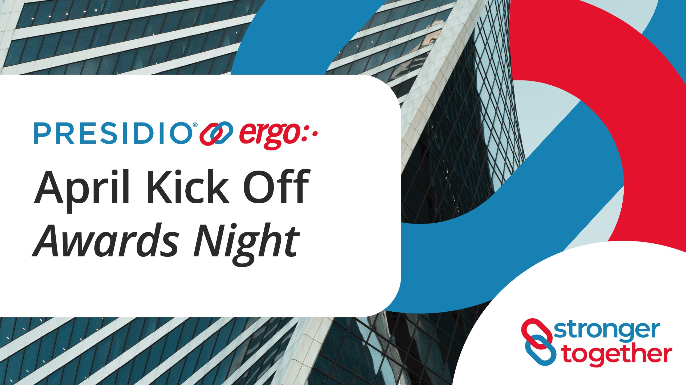
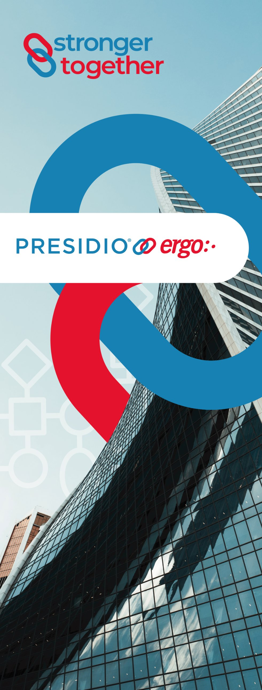
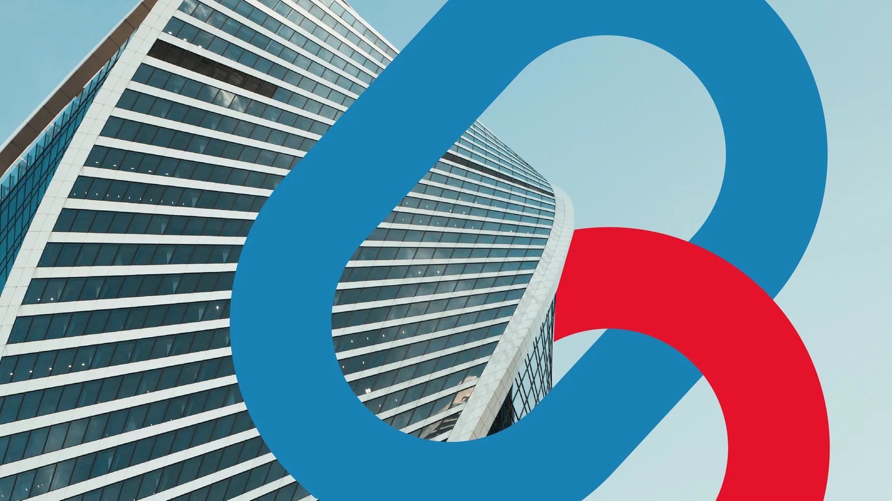
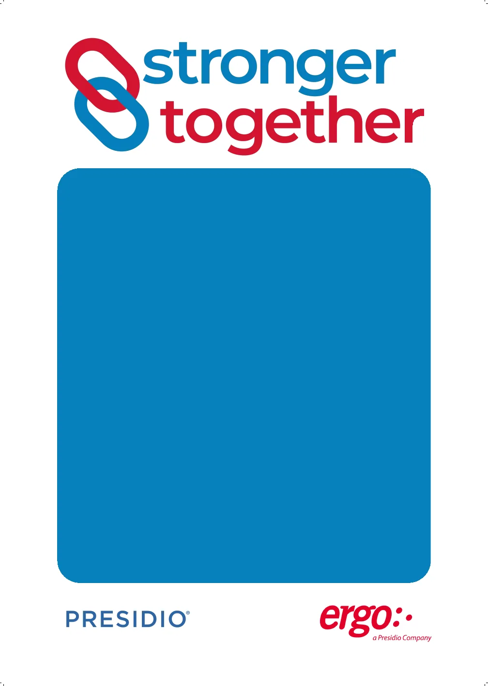
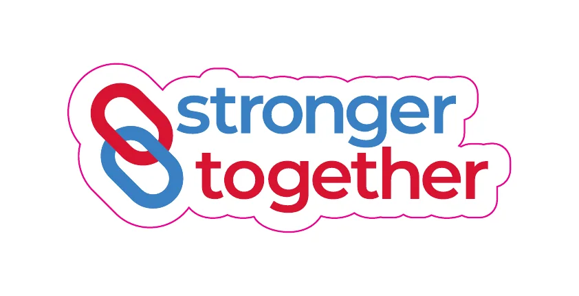
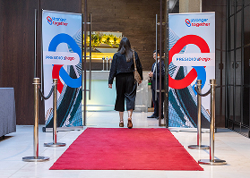
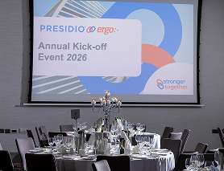
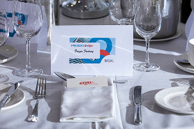
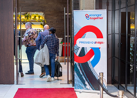

Ergo’s last night under its own name, in a room that held two companies.
Presidio Europe LinkedIn page analytics. Kickoff post 27 April 2026, awards video 28 April 2026. Impressions are for the content, not the design alone.
The last awards night.
The annual kick-off and awards night marked the final celebration under the old name, before the next chapter. The room held two companies, so the identity had to hold two companies without either one winning.

The mark.
Ergo red and Presidio blue interlock. The mark sits between the two logos on everything.
Where it appeared.








The words.
“A shared legacy behind us, and a strong future ahead.”
Ergo on LinkedIn, 27 April 2026.
Three projects, one logic.
The tri-brand system is the rule. Ergo becomes Presidio breaks it on purpose, for a transition. Stronger Together makes the same vector-over-photography move for an event.